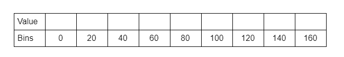

1. Histogram of Oriented Gradient Transform
The histogram of oriented gradients transform is one of the most popular feature extraction algorithms. It comprises the following steps.
-
Calculate the gradient of the image. The Sobel kernel can be used to extract the gradient along x axis \(G_x\) and the gradient along y axis \(G_y\). After that, the magnitude \(\mu\) and the angle \(\theta\) of gradient at each pixel is computed by below equations
\[\mu = \sqrt{G_x^2 + G_y^2}\]
\[\theta = \tan^{-1}(\frac{G_y}{G_x})\]

-
The gradient matrices are divided into 8x8 blocks. For each block, a 9-bin histogram of oriented gradients is calculated
Number of bins = 9 (ranging from \(0^{\circ}\) to \(180^{\circ}\))
Step size \(\Delta\theta = 20^{\circ}\)
Each \(bin_j\) has boundary \([\Delta\theta \cdot j, \Delta\theta \cdot (j + 1)]\)

The center angle value of each bin is \(C_j = \Delta\theta \cdot (j + 0.5)\)
The histogram of oriented gradient is computed by voting approach, in which the value of each bin is accumulated from each elements \(\theta\) and \(\mu\) in the gradient matrices as below
\[j = floor (\frac{\theta}{\Delta\theta})\]
\[V_j = \mu \cdot (\frac{\theta}{\Delta\theta} - \frac{2j + 1}{2})\]
\[V_{(j \mod 9)} = \mu - V_j\]
-
Four 9-bin histograms of oriented gradients are grouped together to create a new 2x2 block that has 36 bins.
\[f_i = [b_1, b_2, ..., b_{36}]\]
Then, each bin is normalized as \(f_i = \frac{f_i}{\sqrt{f_i^2 + \epsilon}}\)
Histogram of Oriented Gradient feature can be collaborated with other machine learning algorithms like Support Vector Machine to perform classification task.
2. Experiment
3. References
- https://towardsdatascience.com/hog-histogram-of-oriented-gradients-67ecd887675f
- https://learnopencv.com/histogram-of-oriented-gradients/